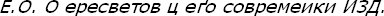
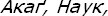

[178] Bu konu üzerinde mukayeseli bir etüt için bkz. Altan Aykut, "İvan Perestetov ve Sultan Mehmed menkıbesi", TTK, Belleten c. XLVI/184, Ankara 1982, s. 861-882; bu konuda temel eser: A. A. Zimin,


Moskova, 1958.